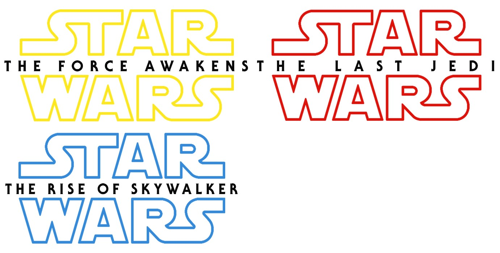

About 30 years after the destruction of the second Death Star, Luke Skywalker has vanished. The remnants of the Empire have become the First Order, which seeks to destroy Luke and the New Republic. The First Order is opposed by the Resistance, led by General Leia Organa. On the planet Jakku, Resistance pilot Poe Dameron obtains a map to Luke's location, but he is captured by First Order commander Kylo Ren—the son of Leia and Han Solo. Poe's droid BB-8 escapes with the map and encounters a scavenger named Rey. Rey and BB-8 team up with a defecting stormtrooper, Finn, along with Han Solo and Chewbacca, to deliver the map to the Resistance.
After finding Luke Skywalker in self-imposed exile, Rey attempts to convince him to teach her the ways of the Force. She also seeks answers about her past and the conflict between Luke and his nephew Ben Solo (now Kylo Ren). Unbeknownst to Luke, Rey starts using the Force to communicate with Kylo. Meanwhile, Leia leads the Resistance as they are pursued by the First Order, led by Supreme Leader Snoke. Rey leaves Luke in an attempt to redeem Kylo and achieve peace. After Kylo kills Snoke, Rey is forced to choose between ruling the galaxy with him, or helping the outnumbered Resistance survive.
The Rise of Skywalker is the final film of the Skywalker saga, featuring a climactic clash between the Resistance and the First Order, and the Jedi and the Sith. The film is set a year following The Last Jedi and depicts the return of Palpatine, who has been secretly controlling the First Order from the Sith planet Exegol. Palpatine orders Kylo Ren to find and kill Rey, who is revealed to be Palpatine's granddaughter. Palpatine unveils an armada of Star Destroyers to reclaim the galaxy. Rey and the Resistance learn of Palpatine's return and embark on a quest to find him. They eventually locate Exegol; Rey confronts Palpatine, while the Resistance attack Palpatine's fleet.
By Aaron Jazzar, Extra Credit for Week 3